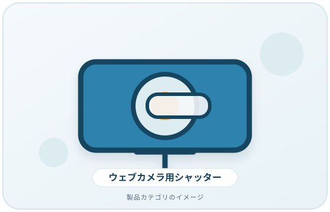
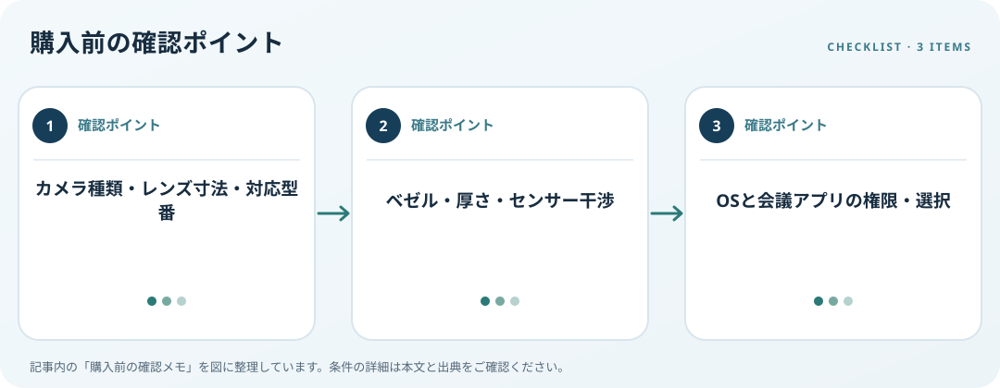

レンズ寸法、画面枠、取付面、マイクやセンサーとの干渉を調べます。この記事では仕様の確認順を整理します。
画像・ボタンはAmazonアソシエイトリンクです。適格購入により紹介料を得る場合があります。

Amazon.co.jpで「ウェブカメラ プライバシーシャッター」を探す ↗

内蔵か外付けかを確認
ノートPC内蔵か外付けWebカメラかを確認し、レンズ周辺を測ります。スライド式、貼付式、キャップ式などの方式を比べ、カメラ角度や既存の物理シャッターと干渉しないか図面を見ます。製品が対象とするレンズ径や機種を確認してください。
取付面とセンサーを確かめる
貼付式はベゼルの幅・曲面・表面材、取り外し時の注意事項を読みます。隣接するマイク、赤外線センサー、顔認証部品を覆わない位置を確認します。薄型PCでは閉じた際に画面とキーボードの間に収まる厚さかも調べます。
OSの設定と併用する
Windows 11では接続カメラの表示やアプリ権限を確認できます。物理シャッターはソフトの権限設定やアプリ状態を置き換えません。使用後にカバーを閉じる運用と、会議アプリのカメラ選択・プレビューを合わせて確認しましょう。
購入前の確認メモ
- カメラ種類・レンズ寸法・対応型番
- ベゼル・厚さ・センサー干渉
- OSと会議アプリの権限・選択
この記事は出典の公開情報を購入前の確認項目に整理したもので、特定商品の使用・実測・レビュー・ランキング・価格・在庫の調査は行っていません。購入時には利用機器メーカーの最新仕様をご確認ください。
出典
- Manage cameras — Microsoft（確認日: 2026-10-10）
- Input accessibility — Microsoft（確認日: 2026-10-10）